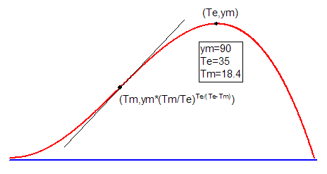

BetaGrowthDecay-FitFunc
ゼロからピークまで上昇し、その後減衰する非対称のドーム型曲線。

パラメータ数: 3
パラメータ名: ym, Te, Tm
意味: ym = ピーク最大値、Te = ピーク最大値の時刻、Tm = 変曲点の時刻
下側境界: Tm>0
上側境界: なし
nlf_BetaGrowthDecay(x,ym,Te,Tm)
BetaGrowthDecay.fdf
Growth
 \left( \frac{x}{T_e} \right)^{\frac{T_e}{T_e - T_m}}")